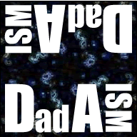

Orientation in Dadaism
Origin
Antiart, shock, protest against WWI, nonsense, rebellion of tradition, seeking of complete freedom, these are the aspects of Dadaism. Dadaist artists sought to narrow the gap between art and life, to make it part of the daily routine. Unlike most artistic styles, Dada was more a way of thinking than a specific visual style.
The movement spontaneously developed when young poets, painters and musicians led by poet Hugo Ball opened Cabaret Voltaire in Zürich, Switzerland. They wanted to take art off its pedestal and make it obtainable for everyone. The Dadaists believed that the first World War was a result of logic and rationality, the destruction they saw was the manifestation of a societal sickness, so they rebelled against conventional thought and sought to bring absurdity into all aspects of their existence. Their cynicism lead them to anarchy in tradition, politics and to inspiration in terms of what art actually is. They reveled in their nihilism and revealed that nihilism to the world as a whole. The poet Tristan Tzara wrote countless manifestos for Dadaism that are, in effect, endless series of random revelations and meaningless statements. The manifestos are rants of nihilism and contempt for logic that had the glorious effect of forcing the reevaluation of the definition of art.
Period
1916 to 1922
Aesthetic Characteristics
Because Dadaism is an antiart, no definite aesthetic characteristics exist. Some of the artwork from this period is representational, some of it is completely abstracted and some of it is about the artists choices rather than the artwork itself.
Influential Artists
Marcel DuChamp
 DuChamp was a guiding light to Dadaism. While most people are familiar with his 1917 work Fountain, a urinal signed "R. Mutt" and placed in an exhibition, DuChamp experimented with more than just found object art. The Fountain has, over time, stood up to every kind of criticism.
DuChamp was a guiding light to Dadaism. While most people are familiar with his 1917 work Fountain, a urinal signed "R. Mutt" and placed in an exhibition, DuChamp experimented with more than just found object art. The Fountain has, over time, stood up to every kind of criticism.
 Statements like "its just an object", "its offensive and indecent", "something already made in mass production in a factory", "it doesn't take any kind of talent or creativity", "anyone can do it" were used to explain why the Fountain is not a work of art. It was a functional object, but DuChamp removed the functionality of it. This piece challenges the definition of what art is and that was the intention.
Statements like "its just an object", "its offensive and indecent", "something already made in mass production in a factory", "it doesn't take any kind of talent or creativity", "anyone can do it" were used to explain why the Fountain is not a work of art. It was a functional object, but DuChamp removed the functionality of it. This piece challenges the definition of what art is and that was the intention.
DuChamps point is that art is not primarily retinal, in a conceptual way it is artistic. He challenges the history of art. Nobody else in history had accomplished this. DuChamp believed that anything that put one to sleep is a bad work of art. DuChamp considered his art and his life to be a matter of chance and of choice. He, therefore, spent the majority of his career redefining the role of the artist and their place in society with objects and imagery that created chance associations.
That idea of chance completed DuChamp's The Bride Stripped Bare by Her Bachelors, Even (the Large Glass) when, in 1927, during transport to an exhibition, the glass panes were shattered. DuChamp had begun this piece in 1915 and then abandoned it in 1923. When the piece was shattered, DuChamp didn't replace the glass, instead he meticulously pieced it back together, he then decided the piece was finished. This work's nonsensical imagery was accompanied by notes from DuChamp explaining that the top portion represented “the Bride” who is “basically a motor” fueled by the “love gasoline”. The bottom portion represented each suitor "grind[ing] his own chocolate", DuChamps wording for masturbation. The piece is representative of DuChamps thoughts on the confusion that is sexuality and desire.
Kurt Schwitters
 Kurt Schwitters found that what one might consider junk are actually objects that can become works of art because old objects have an emotional and visual presence. Schwitters showed a sense of nonsense and the anti bourgeois in his works and he created an offshoot of Dadaism called "Merz".
Kurt Schwitters found that what one might consider junk are actually objects that can become works of art because old objects have an emotional and visual presence. Schwitters showed a sense of nonsense and the anti bourgeois in his works and he created an offshoot of Dadaism called "Merz".
Schwitters was inspired by the Dadaists and applied for membership to the movement stating he was "an artist who nails his pictures together", only to be rejected for being "too bourgeois". His 1920 work, Merz 19, uses recycled objects that would be considered trash and elevates those objects into art.
As the first installation artist, Schwitters turned his home into a work of art, in effect merging art and life. His studio became a sculpture, which in 1924 he titled Merzbau. Although he was never “officially” a member of the Dadaist Movement, art historians place him squarely in Dadaism because of his non sensical imagery, poetry and design and his chance associations and dislocation of the ordinary.
Man Ray
 Man Ray, like DuChamp and Schwitters, used chance to redefine found objects, particularly mass-produced objects and technology. He was dedicated to the exploration of perception and created objects that played with the emotional and psychological hang ups of the audience.
Man Ray, like DuChamp and Schwitters, used chance to redefine found objects, particularly mass-produced objects and technology. He was dedicated to the exploration of perception and created objects that played with the emotional and psychological hang ups of the audience.
His 1921 work Cadeua (Gift) played with the psyche through it's displacement of purpose. The work was an iron with spikes on it, creating a sense of dread, but also corrupting the idea of the functionality of an iron.
Man Ray was a photographer who followed the evolution of Dadaism into Surrealism. As such, he was the only American artists admitted into both avant-garde circles. A multimedia artist, Man Ray was the first to experiment with solarization (second exposure) in photography, and he used this technique, along with rayographs (cameraless prints created by moving light beams) in which to create new interpretations and juxtapositions of common objects.
Results
Photomontage, jarring juxtapositions, chance associations and found object art. Lack of leadership cause dadaism to cease to exist as a cohesive movement in 1922, but the idea that art could push limits and break boundaries in all aspects of life exists still.
Do Dada
Create a Dadaist Art piece:
- Materials
- magazines
- glue
- piece of canvas
- Lay the piece of canvas out on the floor
- Tear out interesting colors, images and words from the magazines you have collected.
- Throw the pieces up in the air over the canvas.
- Glue the pieces to the canvas where they have landed.
Test Your Dada Knowledge
-
Dadaism was started as a movement in Paris, France by Marcel DuChamp.
- True
- False
-
Which artist was never officially accepted into Dadaism?
- Man Ray
- Kurt Schwitters
- Marcel DuChamp
-
Which of these words best describes the aesthetic characteristics of Dadaism?
- cheery
- realistic
- dreamy
- colorful
- indescribable
Think you know Art in the 1920's? Take the test!
Match the images with the keyword boxes by dropping the image underneath the keywords.
anti art, rebellion against conventional thought and sought to bring absurdity into all aspects of existence. DuChamp, Schwitters and Man Ray were influential. Chance associations and found object art.
dream art, interested in dreams as the art of uncovering the unconscious, automatic drawing and chance techniques, representational objects. Paul Klee and Max Ernst were notables. New tools to visualize the unconscious.
political art, geometric abstract art, not about a feeling, but of a sensation, tectonics, texture, and construction, elemental shapes and color to create form. Malevich, Lissinsky and Rodchencko art defined the movement.
Faith in Machines, designs for cars, trains, ships, planes and buildings, integration of art in life. Georges Vantongerloo, Piet Mondrian and Gerrit Rietveld were important artists. Universal laws of equilibrium and harmony for art, streamlined, geometric shapes. Utopian society created through art.